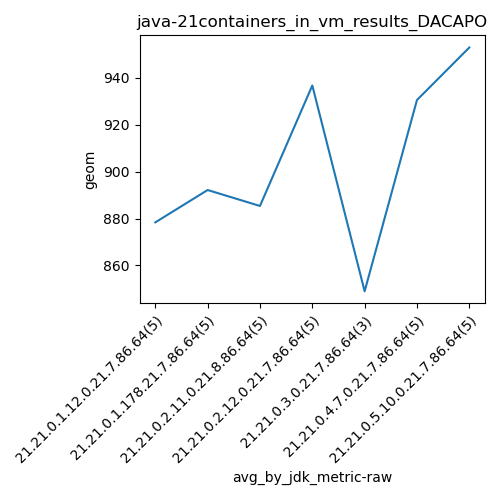

java-21 DACAPO
Context at bottom
/home/jvanek/git/benchmarks-in-nested-virtualisation-toolchain/final_results/containers_in_vm_results/containers_in_vm_results_JMH
java-21
DACAPO
/home/jvanek/git/benchmarks-in-nested-virtualisation-toolchain/final_results/containers_in_vm_results/containers_in_vm_results_J2DBENCH
java-21
DACAPO
/home/jvanek/git/benchmarks-in-nested-virtualisation-toolchain/final_results/containers_in_vm_results/containers_in_vm_results_RADARGUNs3
java-21
DACAPO
/home/jvanek/git/benchmarks-in-nested-virtualisation-toolchain/final_results/containers_in_vm_results/containers_in_vm_results_SPECJBB
java-21
DACAPO
/home/jvanek/git/benchmarks-in-nested-virtualisation-toolchain/final_results/containers_in_vm_results/containers_in_vm_results_RADARGUNs1
java-21
DACAPO
/home/jvanek/git/benchmarks-in-nested-virtualisation-toolchain/final_results/containers_in_vm_results/containers_in_vm_results_DACAPO
java-21
DACAPO
containers_in_vm_results_DACAPO
final score
Expected number of java-21 JDKs: 7
1st avgmed_alljdks_metric:
/home/jvanek/git/benchmarks-in-nested-virtualisation-toolchain/final_results/result_processing.py /home/jvanek/git/benchmarks-in-nested-virtualisation-toolchain/final_results/containers_in_vm_results/containers_in_vm_results_DACAPO geom False
values: [920, 848, 832, 904, 888, 963, 909, 925, 837, 827, 952, 854, 853, 906, 862, 841, 965, 1038, 997, 843, 821, 888, 838, 891, 898, 892, 832, 1140, 837, 979, 1113, 932, 904]

Expected number of iterations: 5
final number of values: 33 out of 35
Pass rate: 94.3%
values: (821, 1140, 906.939393939394, 892)

** accuracy from all jdks and runs
more is better
MIN: 821
MAX: 1140
AVG: 906.939393939394
MED: 892
Relative differences 1:
MIN-MAX: 28.0 %
MIN-AVG: 9.0 %
MIN-MED: 8.0 %
MAX-MIN: -39.0 %
MAX-AVG: -26.0 %
MAX-MED: -28.0 %
AVG-MED: -2.0 %
stored to java-21.properties. sort | uniq that!
2nd avgmed_by_jdk_metric:
values: [878.4, 892.2, 885.4, 936.8, 849.0, 930.6, 953.0]

values: [888, 909, 862, 965, 838, 892, 932]

values: (849.0, 953.0, 903.6285714285714, 892.2)
values: (838, 965, 898.0, 892)

** accuracy from all jdks where runs were avged
more is better
MIN: 849.0
MAX: 953.0
AVG: 903.6285714285714
MED: 892.2
Relative differences 1:
MIN-MAX: 11.0 %
MIN-AVG: 6.0 %
MIN-MED: 5.0 %
MAX-MIN: -12.0 %
MAX-AVG: -5.0 %
MAX-MED: -7.0 %
AVG-MED: -1.0 %
stored to java-21.properties. sort | uniq that!
** accuracy from all jdks where runs were medianed
more is better
MIN: 838
MAX: 965
AVG: 898.0
MED: 892
Relative differences 1:
MIN-MAX: 13.0 %
MIN-AVG: 7.0 %
MIN-MED: 6.0 %
MAX-MIN: -15.0 %
MAX-AVG: -7.0 %
MAX-MED: -8.0 %
AVG-MED: -1.0 %
stored to java-21.properties. sort | uniq that!
pass rates:
containers_in_vm_results_DACAPO=94.3%
Context:
- containers_in_vm_results
- DACAPO